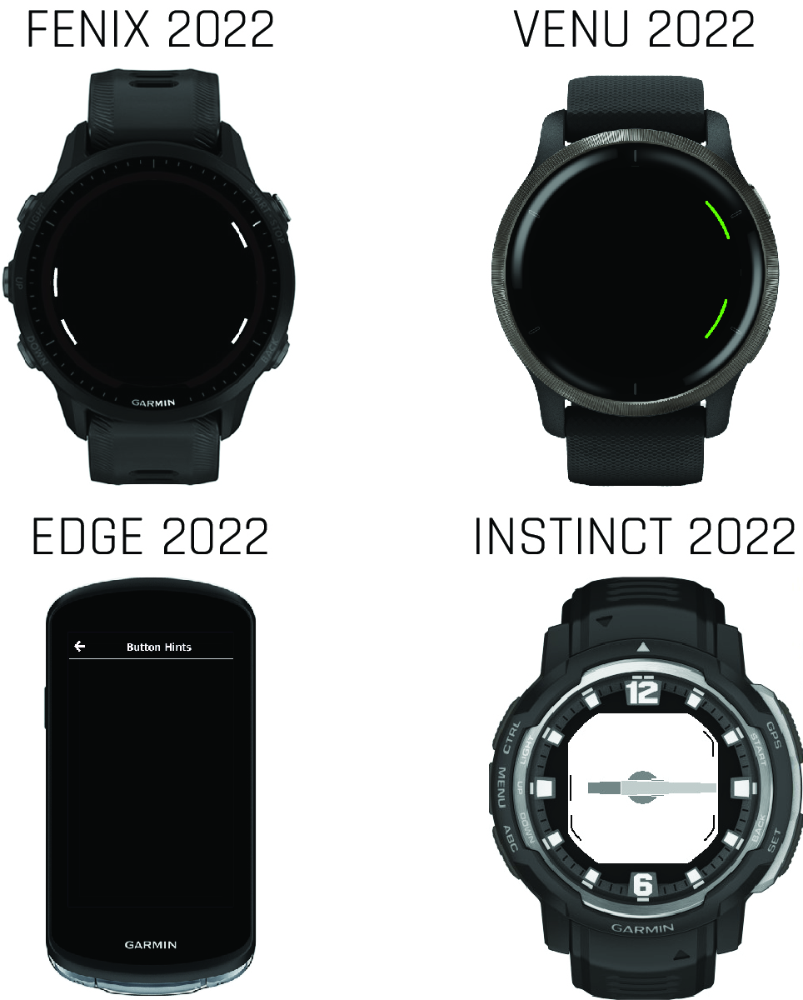

Input Hints

Garmin® software follows common interaction patterns. It is important to provide guidance on a page to indicate which actions are available to the user.
Physical Button Hints
On products without a touchscreen, the software should communicate to the user which buttons trigger the next steps. Button hints highlight the appropriate physical buttons to guide the user.
Example
<!-- layout.xml -->
<!-- Left top hint -->
<bitmap id="leftTop" personality="
system_icon_dark__hint_button_left_top
system_loc__hint_button_left_top" />Selectors
Not every selector is available for every product. Hints applied to a product that does not have a button in that position will automatically be excluded when building for that product.
| Asset Selector | Placement Selector | Context |
|---|---|---|
system_icon_light__hint_button_left_top, system_icon_dark__hint_button_left_top | system_loc__hint_button_left_top, system_size__hint_button_left_top | The top-left button for a wearable with a five-button configuration. |
system_icon_light__hint_button_left_middle, system_icon_dark__hint_button_left_middle | system_loc__hint_button_left_middle, system_size__hint_button_left_middle | The middle-left button for a wearable with a five-button configuration. |
system_icon_light__hint_button_left_bottom, system_icon_dark__hint_button_left_bottom | system_loc__hint_button_left_bottom, system_size__hint_button_left_bottom | The bottom-left button for a wearable with a five-button configuration. |
system_icon_light__hint_button_right_top, system_icon_dark__hint_button_right_top | system_loc__hint_button_right_top, system_size__hint_button_right_top | The top-right button for a wearable with a five-button, three-button, or two-button configuration. |
system_icon_light__hint_button_right_middle, system_icon_dark__hint_button_right_middle | system_loc__hint_button_right_middle, system_size__hint_button_right_middle | The middle-right button for a wearable with a three-button configuration. |
system_icon_light__hint_button_right_bottom, system_icon_dark__hint_button_right_bottom | system_loc__hint_button_right_bottom, system_size__hint_button_right_bottom | The bottom-right button for a wearable with a five-button, three-button, or two-button configuration. |